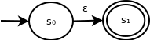
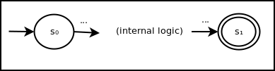
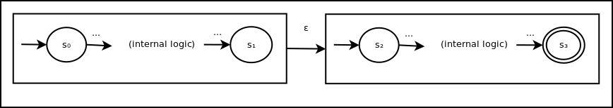
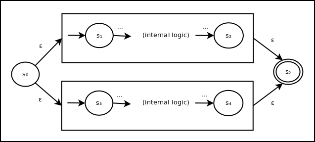
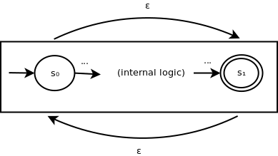

Background
We've seen regular expressions and finite automata. Now, we will demonstrate a method of constructing automata from regular expressions.
Introduction
Thompsons' construction solves two problems with relation to recognizing regular languages specified by a regular expression:
Building blocks
First, we will construct a simple state machine that recognizes a single-character string, as follows:

This will form one of the building blocks of our construction. The other building block is the corresponding machine that recognizes the empty string:
Concatenation
To represent the concatention of two smaller state machines, we need to first model a smaller machine abstractly, as follows:
The smaller state machines can be thought of "state groups" - a collection of states with a start state and an end state. We can create a larger state group recognizing the concatenation of the languages from two smaller groups as follows:
This new state group combines the state machines from the two existing groups via an epsilon transition. This allows the concatenation of languages to be recognizes without needing to process any additional input symbols. We also set the final state of the second group to be the only accepting state so that a partial match is not recognized.
Union
To represent the union of two smaller state machines, we can combine them as follows:
Here, an ε transition can be made to the machine for either part of the union and back out to a final accepting state. Hence, if either smaller state machine would have accepted, this larger machine will accept.
Kleene closure
Similarly, we can construct a larger machine to recognize the kleene closure of any smaller group as follows:
Here, to recognize ε we make the ε transition. To recognize some positive number of repetitions of something the inner tate group recognizes, we can progress through the inner group and then the backward via the opposite ε transition as many times is needed.
Summary
By using these constructions, we can build an ε-NFA from any regular expression and recognize its language.
Example
The following ε-NFA recognizes the language corresponding to the expression R = ab ∪ c*:

GitHub Repository: https://github.com/bprollinson/ripal
Copyright © 2017 Brendan Rollinson-Lorimer